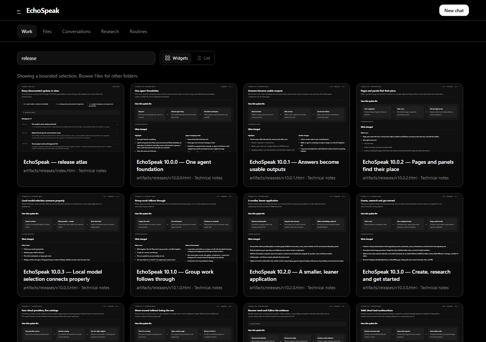
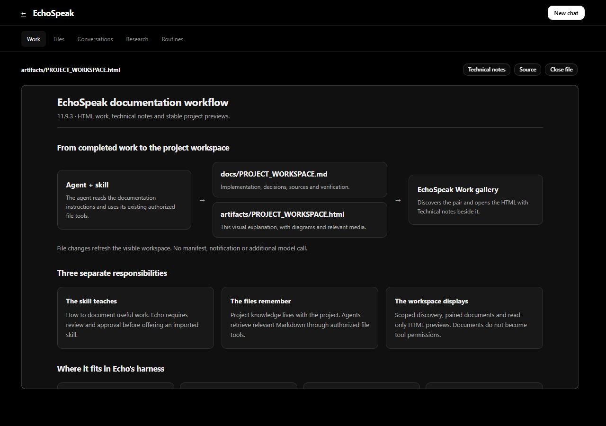
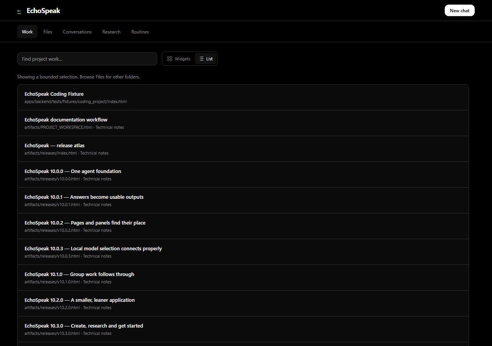

EchoSpeak documentation workflow
11.9.3 · HTML work, technical notes and stable project previews.
From completed work to the project workspace
File changes refresh the visible workspace. No manifest, notification or additional model call.
Three separate responsibilities
The skill teaches
How to document useful work. Echo requires review and approval before offering an imported skill.
The files remember
Project knowledge lives with the project. Agents retrieve relevant Markdown through authorized file tools.
The workspace displays
Scoped discovery, paired documents and read-only HTML previews. Documents do not become tool permissions.
Where it fits in Echo's harness
This workflow documents and displays work inside the existing harness. It adds no separate agent execution system.
Browse without losing your place
HTML only
Widgets or List beside search. Markdown stays in Files and Technical notes; other artifacts and creations keep their libraries.
Quiet refresh
Each report follows its own revision. Unrelated edits leave its preview and scroll in place; real HTML edits reload that document.
Project identity
Edit its display name and logo without moving its folder. Reports follow the attached project's style, not the viewer's theme.
Verified in isolation
72 focused offline backend tests and 153 frontend tests passed, with one Windows symlink test skipped. Type checking and the production web build passed. Actual workspace/editor components were checked at 1280, 960 and 390 pixels: HTML-only browsing, saved list mode, contained image/HTML previews, no reload on unrelated changes, and name/logo editing. No browser errors or external requests were observed.
The installed Windows app and live independent agents remain owner testing. Existing imported custom skills are preserved; updated imports require review.
See the implemented workspace


Historical release reports retain their original implementation notes and verification limits. This report describes the current file-based workspace.
